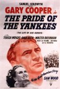
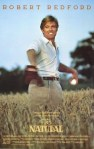
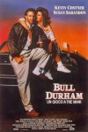
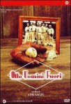
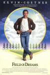
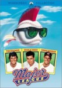
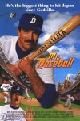
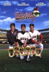

Il cinema ha la straordinaria capacità di farci sognare, di vivere anche per sole due ore la fantastica vita del protagonista. Il baseball è lo sport per eccellenza in quanto a storie, leggende o imprese presunte impossibili, storie di grandi vittorie o cocenti sconfitte. Molti considerano il baseball al pari della vita stessa essendo uno sport che richiede forza, agilità, resistenza, intelligenza, gioco di squadra ma c'è anche il momento nel quale sei tu contro tutti. Questi sono i motivi che hanno spinto grandi registi a portare su pellicola queste storie ed a ricavarne grandi successi. Di seguito vi elenchiamo alcuni di questi titoli in ordine cronologico.

Field of Dreams
Phil Alden Robinson
Kevin Costner, Amy Madigan, James Earl Jones
Un agricoltore dell'Iowa sente una voce misteriosa che gli dice di costruire un campo da baseball nel suo terreno. "If you build it, he will come" è diventata una delle frasi più celebri del cinema.

The Natural
Barry Levinson
Robert Redford, Glenn Close, Kim Basinger
Roy Hobbs, un talento straordinario, vede la sua carriera interrotta da un misterioso incidente. 16 anni dopo torna a giocare, diventando una leggenda con la sua mazza "Wonderboy".

A League of Their Own
Penny Marshall
Geena Davis, Tom Hanks, Madonna
Durante la Seconda Guerra Mondiale, con gli uomini al fronte, viene creata la prima lega femminile di baseball professionistico. "There's no crying in baseball!"

The Sandlot
David Mickey Evans
Tom Guiry, Mike Vitar, Patrick Renna
Estate 1962: un ragazzino timido si trasferisce in una nuova città e trova l'amicizia grazie a una squadra di baseball del quartiere. Un classico per famiglie.

Bull Durham
Ron Shelton
Kevin Costner, Susan Sarandon, Tim Robbins
Una commedia romantica ambientata nel mondo del baseball delle Minor Leagues. Crash Davis, veterano navigato, deve fare da mentore al giovane e selvaggio Nuke LaLoosh.

Moneyball
Bennett Miller
Brad Pitt, Jonah Hill, Philip Seymour Hoffman
Storia vera di Billy Beane, general manager degli Oakland Athletics, che rivoluziona il baseball usando l'analisi statistica per costruire una squadra vincente con un budget limitato.

Major League
David S. Ward
Tom Berenger, Charlie Sheen, Wesley Snipes
La nuova proprietaria dei Cleveland Indians mette insieme una squadra di giocatori improbabili per far fallire la franchigia. Ma loro hanno altri piani...

42
Brian Helgeland
Chadwick Boseman, Harrison Ford
La storia di Jackie Robinson, il primo afroamericano a giocare nella Major League nell'era moderna. Il suo numero 42 è stato ritirato da tutte le squadre della MLB.
"Il baseball è il gioco più bello del mondo. Nessun orologio, nessun limite di tempo. La partita finisce quando deve finire."— Bull Durham (1988)
I film sono fantastici, ma niente batte l'emozione del diamante vero!